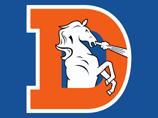

the broncos are a professinal american football team in the nfl's afc west division known for there 3 superbowl wins and pasionate fanbase they play at empower field at mile high

the broncos are owned by the walton penner family
the broncos rivals imclude the kansas city cheifs,the los angles chargers and the las vegas raiders

a former nfl qb known for his strong arm and conpetitive drive he led the broncos to two superbowl wins in his 16 year career

a pass chatching tight end was a key target for john elway shannon won 2 superbowls with the denver broncos
a seven time pro bowl linbacker he was a cruitiul part of the orange crush defense he was inducted into the hall of fame in 2024
a saftey known for his hard hits he was an 8 time pro bowler and a key part of the superbowl winning defense he was inducted into the hall of fame in 2020